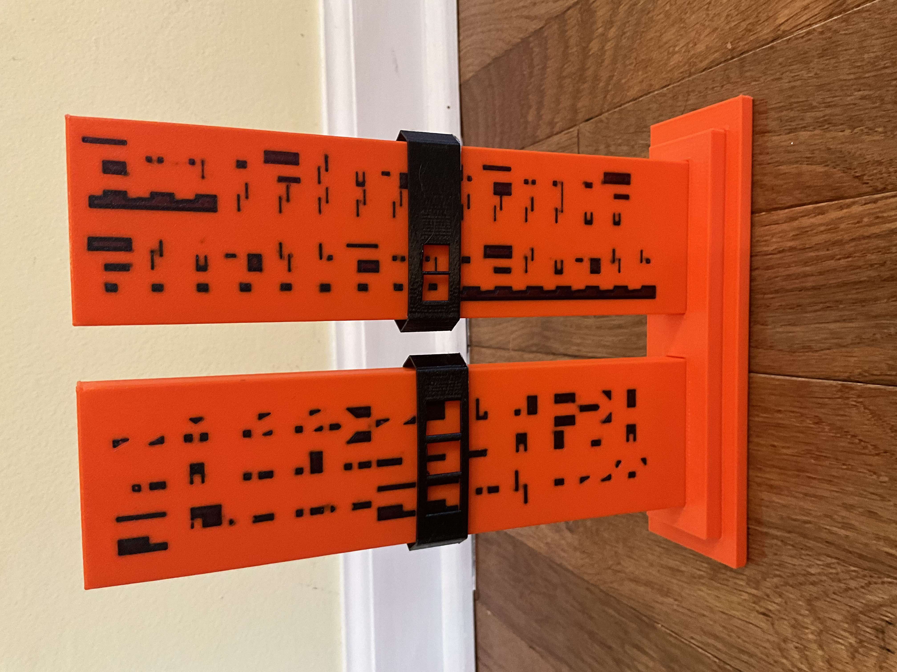
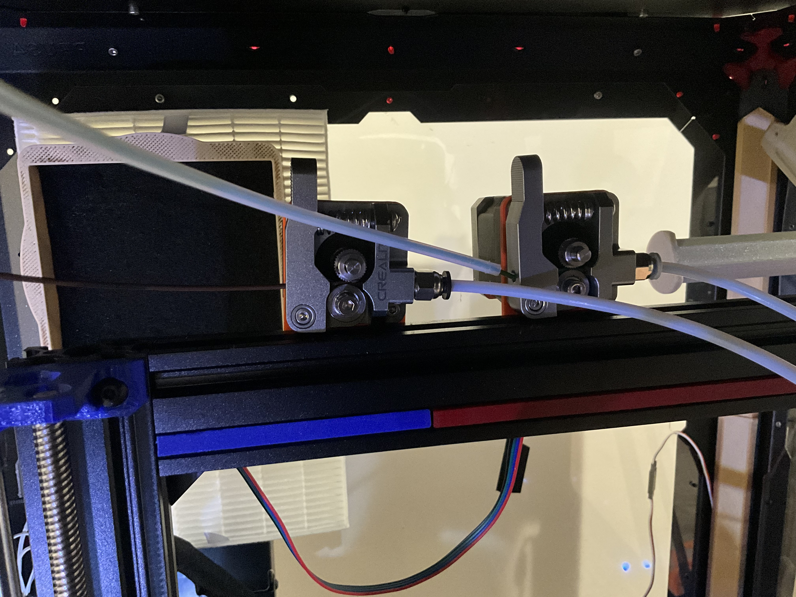

Welcome to the 3MS Documentation
The 3MS is short for MMMS, which stands for Modular Multi Material System

Inspiration
- Prusa MMU1
- Bambu AMS
Info
This documentation is still under construction. If you have any questions not answered by the documentation, please open an issue on Github.
Sample Prints
Sample Prints

Model: Sheep by Cipis


Model: Voron Cube (bundled with OrcaSlicer), painted by me in OrcaSlicer
Printed at 50% scale
Model: T-rex by Cipis

Photos
Photos



Why 3MS?
Why use the 3MS when there are many other multi-material systems?
Here are a few reasons:
- Extremely simple design increases reliability
- Thorough documentation to help setup, optomize, and troubleshoot
- No slicer custom toolchange G-Code needed
- Easily expandable to any number of filaments (currently up to four)
- Automatically retry failed toolchanges
- Toolchanges Without Tip Shaping or Filament Cutter!
With that said, there are a few reasons why you might not want to/be able to use the 3MS:
- Klipper firmware is a requirement, so Marlin and RRF setups are a no go
- A filament sensor is required, so if you don't have one/don't plan to get one, the 3MS won't work with your setup
Requirements
To use the 3MS, your setup has to meet the following requirements:
- Run Klipper firmware
- Have SSH (PuTTY) access (99.9% of Klipper installations have this, and if you don't you really should setup SSH)
- Have one spare USB port
- Have an adapter to install a PTFE tube to the inlet of your printer's extruder.
How it works
Here is a example step by step of what goes on during a single 3MS toolchange from T0 to T1:
- Tip shaping and filament unload is performed by the slicer
- The 3MS unloads T0 200mm at 4500mm/min (75mm/s)
- The 3MS desyncs T0 from the extruder
- The 3MS checks if the filament was successfully unloaded
- The 3MS syncs T1 with the extruder
- The 3MS loads T1 210mm at 4500mm/min
- The 3MS checks if the filament was successfully loaded
- The printer loads the filament to the nozzle
For more detail about the Tx command, see Flowchart.
Think of the 3MS as an extension to your current extruder's length. It allows for switching filaments, but while printing allows for all the benefits of your printer's extruder.
The 3MS's motors work together with your printer's extruder. This way, there won't be any additional resistance from pulling the filament through a disabled extruder. Also, unloads and loads to/from the printer's extruder are fully synchronized with the 3MS. This allows for even faster toolchanges!
Get Started
To get started with the 3MS, see the Master Instructions.
What about the 3DChameleon?
I recently created a klipper plugin for the 3DChameleon after purchasing a unit. I'm sure my Chameleon could have worked if I had tuned it further, but after several months with only partial success, I gave up. I am still open to pull requests for 3dchameleon-klipper and will do my best to respond to issues there, but I won't be able to test it myself anymore.
Master Instructions
Due to the modularity of the 3MS, there are many ways to set it up. This guide attempts to encompass all supported ways of setting up the 3MS.
Basic Steps
The basic steps this guide will follow are:
- Getting a BOM
- Assembling your 3MS
- Configuring your 3MS
- Stepper motor setup
- Slicer setup
- First print
- Troubleshooting
- Updating
0. Explanations
Before starting the instructions, a basic understanding of how the 3MS works is recommended. There are two types of components in the 3MS:
-
Controller
This controls the stepper motors
-
Filament Units
This moves the filament
The number of filaments you will be able to print with is equal to the number of filament units you have. For example, two filament units will let you print with two colors. It is important to note that one filament unit will NOT let you print in multimaterial.
0.5. Choosing a Controller
Choose one of the controllers from Controllers before continuing.
1. Getting a BOM
Go to BOM to view the bill of materials for the number of filament units you want. Example BOM for two filament units and a SKR Mini E3 V2:
| Name | Price | Quantity | Link | Notes |
|---|---|---|---|---|
| SKR Mini E3 V2 | $34.99 | 1 | Amazon | |
| Duponts | $9.99 | 1 | Amazon | These wires are only sufficient to run steppers, not heaters |
| 12V PSU | $7.39 | 1 | Amazon | This PSU is only sufficient to run steppers, not heaters |
| NEMA17 Stepper Motor | $9.99 | 2 | Amazon | You can use a pancake stepper if you want, but it will have less torque |
| MK8 Metal Extruder | $9.99 | 2 | Amazon | |
| Capricorn PTFE Tubing | $11.49 | 1 | Amazon | You likely won't need this for every unit, as this is usually too long for only one unit |
2. Assembling your 3MS
Follow Assembly to assemble your 3MS.
3. Configuring your 3MS
- Install Klipper firmware onto the MCU by following Firmware.
- Install DynamicMacros, following instructions from here.
- Follow Installation to install the 3MS configuration.
- Follow Filament Sensor to setup your filament sensor with the 3MS.
4. Stepper motor setup
Follow Stepper Setup to setup and calibrate each of your filament units.
5. Slicer setup
Follow Slicer Setup to setup your slicer for the 3MS.
6. First print
Follow First Print to create your first multimaterial print with the 3MS.
7. Troubleshooting
Check Troubleshooting to find guides to troubleshoot your 3MS.
8. Updating
To update the 3MS configuration, go to the Update Manager in Mainsail/Fluidd and refresh the updates.

Next, find the "mmms" entry in the list. If there is an "Update" button next to it, click it and begin updating.
After updating, in your terminal, run:
sh ~/3MS/install.sh
This will install the new 3MS configuration. Next, restart Klipper:
Info
It is important to restart the Klipper service, and not just run the RESTART command.
Either run this command in your terminal or restart from Mainsail/Fluidd:
sudo service klipper restart

Setup ↵
BOM
Number of filament units
First, choose the number of filament units you want. Each filament unit lets you print with an additional filament. Two filament units are the minimum. You can add or remove filament units after building, but the BOM and configuration will vary based on how many filament units you want.
Controller BOMs
Choose the BOM for your chosen controller from the list below:
Filament Unit BOMs
For each filament unit, purchase this BOM:
| Name | Quantity | Price | Link | Notes |
|---|---|---|---|---|
| NEMA17 Stepper Motor | 1 | $9.99 | Amazon | You can use a pancake stepper if you want, but it will have less torque |
| MK8 Metal Extruder | 1 | $9.99 | Amazon | |
| Capricorn PTFE Tubing | 1 | $11.49 | Amazon | You likely won't need this for every unit, as this is usually too long for only one unit |
Controllers ↵
Controllers
Follow this guide to determine which controller to use in your 3MS.
Options
The 3MS works on multiple different controllers.
Info
If your printer's mainboard has spare stepper ports, you can use them to control 3MS steppers. You can open an issue on Github (there's a template) to get a configuration made for your specific setup. Any controllers listed with "(main MCU)" use those spare stepper plugs.
Choose one of the following supported controllers (a checkmark indicates it is fully tested):
-
Fully Tested
-
BTT Octopus (main MCU) (4 colors)
Untested
-
Einsy RAMBo (main MCU) with SKR Mini E3 V2.0 (3ms MCU)
Expert modification, in development
BTT SKR Mini E3 V2
Max filament units: 4
MCU Name: 3ms
BOM
| Name | Price | Quantity | Link | Notes |
|---|---|---|---|---|
| SKR Mini E3 V2 | $34.99 | 1 | Amazon | |
| Duponts | $9.99 | 1 | Amazon | These wires are only sufficient to run steppers, not heaters |
| 12V PSU | $7.39 | 1 | Amazon | This PSU is only sufficient to run steppers, not heaters |
Wiring
Route the wires from the NEMA17's to the controller board. Follow this table to determine which port to plug the motors into:
| Filament Unit # | Motor Port |
|---|---|
| 0 | XM |
| 1 | YM |
| 2 | ZAM or ZBM |
| 3 | E0M |
Now, grab your 12V PSU and two M-M duponts, one red and one black (M-M means that there is metal coming out of both ends of the cable). Plug the PSU into the wall, but don't plug the screw terminals into the PSU (the screw terminals have green)
- Plug the red wire into the positive terminal of the screw termianls
-
Plug the black wire into the negative terminal of the screw terminals
Danger
These dupont cables are too thin to run much more than the stepper motors. If you run a heater or other power-intensive device off of the SKR board, the duponts and/or PSU can melt/catch fire. To reduce the risk of this, you can double up on the duponts or get thicker wires.
-
Following this image, choose either the DCIN or POWER input
- Route the two wires inside closest to your chosen input
- Using the markings on the board, plug the red wire into the positive terminal on the SKR
- Using the markings on the board, plug the black wire into the negative terminal on the SKR
-
Verify all connections
Warning
If the wires are plugged into the wrong place, or swapped polarities, your SKR, Stepper motors, and/or PSU can be badly damaged.
-
Plug the PSU screw terminals into the PSU wire
If the SKR lights up, you wired it correctly!
Finally, plug the SKR into your Klipper host with the blue cable that came with it.
BTT Octopus (main MCU)
Warning
This configuration may not work with the BTT Octopus Pro.
Max filament units: 4
MCU Name: main
main MCU
This configuration is a main MCU configuration, meaning that your printer should already be running off a BTT Octopus and you don't need to purchase one.
BOM
Per filament unit:
1x TMC2209 ($7 each)
Wiring
Route the wires from the NEMA17's to the controller board. Follow this table to determine which port to plug the motors into:
| Filament Unit # | Motor Port |
|---|---|
| 0 | MOTOR7 |
| 1 | MOTOR6 |
| 2 | MOTOR5 |
| 3 | MOTOR4 |
Einsy RAMBo (main MCU) with SKR Mini E3 V2
Danger
This guide is an expert guide only
Info
This modification is designed for the Prusa MK3/S/S+, and depends on this Klipper configuration.
Why?
When printing fast, the TMC2130's on the Einsy RAMBo can get quite loud. The TMC2209's on the SKR Mini are much quieter and support denser microstepping.
BOM
| Name | Price | Quantity | Link | Notes |
|---|---|---|---|---|
| PSU -> Einsy Cable | $7.99 | 1 | PartsBuilt3D | |
| Stepperonline NEMA17 | $9.99 each | Amazon | 2 | Replaces current XY motors |
Wiring
First, unplug the 3MS steppers from the SKR Mini, and the XY steppers from the Einsy RAMBo. The motors will need to be switched due to different connector types between boards.
This table outlines the major wiring of this modification.
| Einsy RAMBo | SKR Mini E3 V2 | Motor |
|---|---|---|
| PSU+ | POWER+ | |
| PSU- | POWER- | |
| XM | 3ms0 | |
| YM | 3ms1 | |
| XM | X | |
| YM | Y |
Configuration
In your printer.cfg, comment out these lines:
#[include klipper-prusa-mk3s/mk3s/steppers.cfg]
#[include klipper-prusa-mk3s/mk3s/tmc2130.cfg]
Next, copy the contents of 3ms/controllers/einsy_rambo_with_skr_mini/xy-motors.cfg and ze-motors.cfg to klipper-prusa-mk3s/skr/xy.cfg, and klipper-prusa-mk3s/mk3s/ze.cfg, respectively.
Add the following new lines:
[include klipper-prusa-mk3s/skr/xy.cfg]
[include klipper-prusa-mk3s/mk3s/ze.cfg]
Restart Klipper.
Ended: Controllers
Assembly
Follow this guide to assemble your 3MS.
Printed Parts
An optional board enclosure for the SKR Mini E3 is available here.
Additionaly, an optional univeral mount for the MK8 extruder using M3 bolts is available here. Note that this requires 2-4 M3 bolts and a place to screw the bolts into.
Finally, you will need to print enough of these Y splitters for the filament.
MK8 Assembly
Next, assemble the MK8 extruders onto the NEMA17 motors using the provided instructions that came with them. If you use the mount provided above, make sure it is in between the MK8 and NEMA17.
Wiring
Follow one of the following guides based on your controller:
Firmware
Follow this guide to install Klipper firmware onto your 3MS MCU. This guide is a modified version of the Klipper Documentation.
Info
The following controller(s) can skip this guide:
- BTT Octopus (main MCU)
Create firmware.bin
Make sure your 3MS MCU is plugged into your Klipper Host. Run in your terminal:
cd ~/klipper
make menuconfig
In the menuconfig, configure it to your MCU. Instructions are included at the top of 3ms/controllers/xxx/steppers.cfg for future reference. A copy of it is provided here:
# This file contains common pin mappings for the BIGTREETECH SKR mini
# E3 v2.0. To use this config, the firmware should be compiled for the
# STM32F103 with a "28KiB bootloader" and USB communication. Also,
# select "Enable extra low-level configuration options" and configure
# "GPIO pins to set at micro-controller startup" to "!PA14".
Run in your terminal:
make clean
make
The klipper.bin file, located in ~/klipper/out/klipper.bin needs to be copied to a MicroSD card and renamed to firmware.bin (case-sensitive).
Install firmware.bin
Next, unplug the 3MS board from the PSU and your Klipper Host and insert the SD Card. Next, plug in the PSU, THEN the Klipper Host to the 3MS board. The firmware is now flashed.
Get MCU ID
In the terminal, run:
ls /dev/serial/by-id/
Example output:
usb-Klipper_stm32f103xe_33FFD1054746333809650557-if00
usb-Prusa_Research__prusa3d.com__Original_Prusa_i3_MK3_xxx-if00
In this case, the first line is the 3MS, and the second line is the 3D printer. Now that you know the id of the 3MS MCU, copy it and save it to a file:
cd ~ && echo "<your-mcu-id>" >> mcu.txt
Slicer Setup
Follow this guide to setup the 3MS with your slicer. OrcaSlicer will be used in this guide, but these same settings (with different names) can be applied to PrusaSlicer and SuperSlicer.
Number of Filament Units
Set the number of filaments in your slicer to the number of filament units in your 3MS.

In OrcaSlicer, press the filament plus button until there are as many filaments displayed as you have filament units.
Klipper Start/End G-Code
In your Klipper PRINT_START macro, add the following right before your purge line:
MMMS_START INITIAL_TOOL={params.INITIAL_EXTRUDER}
In your PRINT_END macro, add the following before the cooldown command is called:
MMMS_END
Slicer Start G-Code
In your slicer's Start G-Code, add the following parameter to your PRINT_START:
INITIAL_EXTRUDER=[initial_extruder]

Info
This is the last required part of slicer setup.
Optional: klipper_estimator
If you use klipper_estimator and want the toolchange represented in the time estimate, time your toolchange, then change your Change filament G-Code:

First Print
Follow this guide to begin your first multimaterial print. There are two main ways to prepare a model for multimaterial painting.
Method 1: Multimaterial Painting
This method allows you to turn any model, even if it's not designed for multimaterial printing, into a multimaterial print. First, import your model into the slicer. In this case, a 3DBenchy will be used.
Cmd+I OR Ctrl+I

Next, select the model and click multimaterial painting at the top.
N

Once you're in this menu, you can choose any tool, tool size, and filament. Now, just drag over the model to apply the selected tool to the model. In this case, the hull of the 3DBenchy will be set to filament two using the fill tool.

Finally, hit slice and your model is ready to print!
Cmd+R OR Ctrl+R

Method 2: Multimaterial Model
This method allows you to turn parts of a model to different materials. For this tutorial, this T-rex by Cipis will be used. First, import your model into the slicer. If prompted while opening to treat the model as multiple parts, select "Yes".
Cmd+I OR Ctrl+I

Next, go to object settings and change the different parts of the model to different colors.

Finally, hit slice and your model is ready to print!
Cmd+R OR Ctrl+R

Wipe Tower Position
In the examples, you may have noticed that the wipe tower is far from the model. The travel time between the model and wipe tower adds up, and moving the tower closer can help reduce print time.
In the "Prepare" view, click and drag the wipe tower as close to the object as you can without colliding.

If you have a camera on your 3D printer, you may want to put the wipe tower "behind" the part from your camera's perspective.
Ended: Setup
Configuration ↵
Configuration
This guide covers the configuration structure and options of the 3MS.
main.cfg
main.cfg is located in 3ms/main.cfg. It contains the following:
[save_variables]configuration section. This section sets the location where variables about the previous tool will be saved.[include]sections. These reference other configuration files covered in this guide. The included configurations are:settings.cfgmacros.cfgcontrollers/xxx/steppers.cfg
settings.cfg
settings.cfg contains the settings the 3MS uses during toolchanges in macros.cfg. Further information is here.
macros.cfg
macros.cfg contains the macros the 3MS uses during toolchanges. Further information is here.
controllers/xxx/steppers.cfg
steppers.cfg contains the MCU configuration for the 3MS. It contains the following:
[extruder_stepper 3msx]This contains the pin mappings for the motor assigned to 3MS tool x.[tmc2209 extruder_stepper 3msx]This contains the pin mappings for the TMC2209 controlling the motor assigned to 3MS tool x.[mcu 3ms]This contains the serial path to the 3MS MCU.- Other sections: These are configuration sections specific to the MCU and should not be modified.
KlipperScreen.conf
This contains the KlipperScreen 3MS menu configuration. For more information, see KlipperScreen.
Installation
Follow this guide to install the 3MS configuration and macros.
Clone Repository
First, clone the 3MS repository:
cd ~
git clone https://github.com/3DCoded/3MS
cd 3MS
Install Script
Run the install script:
sh install.sh
printer.cfg
In your printer.cfg, add:
[include 3ms/main.cfg]
DynamicMacros
The 3MS configuration depends on DynamicMacros. If you haven't installed it already, follow the instructions here to do so.
Remove the following line from your 3ms/main.cfg if it exists:
[include ./macros.cfg]
Add 3ms/macros.cfg to your [dynamicmacros] config section. Example:
[dynamicmacros]
configs: macros.cfg,othermacros.cfg
[dynamicmacros]
configs: macros.cfg,othermacros.cfg,3ms/macros.cfg
Moonraker Update Manager
To enable updates for the 3MS, add the following to your moonraker.conf:
# 3MS Update Manager
[update_manager mmms]
type: git_repo
path: ~/3MS
origin: https://github.com/3DCoded/3MS.git
primary_branch: main
is_system_service: False
install_script: install.sh
Warning
When updating via Moonraker, the following files will be overwritten:
macros.cfgKlipperScreen.conf
If you have any changes in these files, they will be lost when updating.
Controller
In 3ms/main.cfg, edit the [include ./controllers/xxx/steppers.cfg] line, replacing xxx with the config name of your controller:
| Controller Name | Config Name |
|---|---|
| SKR Mini E3 V2 | btt_skr_mini_e3_v2 |
| BTT Octopus (main MCU) | btt_octopus_main |
Configure MCU ID
Finally, to configure the MCU ID you saved from Firmware, run in your terminal:
cd ~ && cat mcu.txt
Copy the path that is output. Now, in your 3ms/controllers/xxx/steppers.cfg, in the [mcu 3ms] section (towards the bottom), set the MCU ID.
Example:
[mcu 3ms]
serial: /dev/serial/by-id/<your-mcu-id>
[mcu 3ms]
serial: /dev/serial/by-id/usb-Klipper_stm32f103xe_33FFD1054746333809650557-if00
Stepper Motors
Follow this guide to calibrate each of the stepper motors. Each of these steps should be repeated for each of your filament units, replacing TOOL=0 with TOOL=1, and so on. Also replacing 3ms0 with 3ms1, and so on.
Info
If your stepper motor shakes erratically while running any of these commands, your wiring may be incorrect.
Is the motor spinning?
Run this command:
SYNC_TOOL TOOL=0
G1 E50 F4500
If the motor spins, skip to the next step. If not, check your wiring first. If your wiring is fine, go to 3ms/steppers.cfg. Locate the section named [extruder_stepper 3ms0]. In front of the enable_pin, add, an !. If there already is one, remove it. Example:
enable_pin: !3ms: PD7
enable_pin: 3ms: PD7
Is the motor spinning backwards?
Preload each of the filament units with a piece of scrap filament by pushing the lever to release the tension, inserting filament, then releasing the lever to restore tension. Next, run this command:
SYNC_TOOL TOOL=0
G1 E50 F4500
Note which way the filament moves. If it moves forwards, away from the PTFE coupler, skip to the last step. If it moves backwards, you have two choices:
- Switch the motor's wires
- Invert the pin in the configuration
To invert the pin in the configuration, locate the configuration section for the filament unit spinning backwards, and invert the dir_pin. See the previous section for how to invert the pin.
How far does the filament move?
This section is a modified version of the Klipper Docs
Preload each of the filament units with a piece of scrap filament at least 200mm long by pushing the lever to release the tension, inserting filament, then releasing the lever to restore tension.
Use a ruler and a marker to place a mark 70mm from the inlet of the filament unit. Use calipers to measure the actual distance. Write it down, as it will be referred to as <initial_mark_distance>.
Next, run this command:
SYNC_TOOL TOOL=0
G1 E50 F1500
Use calipers to measure the new distance between the inlet of the filament unit and the mark. Write it down, as it will be referred to as <next_mark_distance>.
Calculate <actual_extrude_distance> = <initial_mark_distance> - <next_mark_distance>
In the steppers.cfg file (located in 3ms/controllers/xxx/steppers.cfg), locate the configuration section for the current extruder. Example:
[extruder_stepper 3ms0]
extruder: extruder
step_pin: 3ms: PB13
dir_pin: !3ms: PB12
enable_pin: !3ms: PB14
microsteps: 16
rotation_distance: 32.8450
Note the rotation_distance (last line). In this case, it is 32.8450.
Calculate the new rotation distance: new_rotation_distance = <rotation_distance> * <actual_extrude_distance> / 50.
Round this result to three or four decimal places. Decrease it by 0.005 (this is so that if this result is slightly off, the 3MS filament unit will skip, instead of the printer's extruder stripping the filament during a print).
Set the new rotation_distance in your config. Save it and restart Klipper.
Info
If you use the same stepper motor brand and model for each of your filament units, you likely only have to do this step for one stepper, then copy over the rotation_distance to all the others.
Filament Sensor
Follow this guide to configure your filament sensor with the 3MS.
Location of Sensor
The filament sensor should be right before the extruder, and after the Y splitter. Other locations, such as between the hotend and extruder, have not been tested.
Warning
The 3MS has only been tested with a filament_switch_sensor, and not with a filament_motion_sensor
Configuration
To configure your filament sensor with the 3MS, open 3ms/settings.cfg and change the following (assuming your filament sensor is named "runout_sensor"):
fsensor_name: "fsensor"
fsensor_name: "runout_sensor"
Macros
3MS Settings
MMMS_SETTINGS
Stores the settings for the 3MS.
Default Settings
variable_load_distance: 210
variable_unload_distance: 200
variable_load_speed: 4500
vairable_unload_speed: 4500
variable_fsensor_delay: 2000
variable_num_tools: 2
variable_step_size: 99
variable_retry_dist: 50
variable_retry_speed: 900
Example Usage
MMMS_SETTINGS
SET_3MS_SETTINGS
Sets the configuration for the 3MS. Allows temporary customization of load and unload distances and speeds
Example Usage
SET_3MS_SETTINGS LOAD_DISTANCE=210 UNLOAD_DISTANCE=200 LOAD_SPEED=3500 UNLOAD_SPEED=5500 FSENSOR_DELAY=2500
GET_3MS_SETTINGS
Dispalys the configuration for the 3MS.
Example Usage
GET_3MS_SETTINGS
Filament Handling
MMMS_UNLOAD
Unloads filament by a specified distance and speed. If no distance/speed is specified, it uses the default unload distance/speed from MMMS_SETTINGS.
Example Usage
MMMS_UNLOAD DISTANCE=200 SPEED=5500
MMMS_LOAD
Loads filament by a specified distance and speed. If no distance/speed is specified, it uses the default load distance/speed from MMMS_SETTINGS.
Example Usage
MMMS_LOAD DISTANCE=210 SPEED=3500
CHECK_FSENSOR
Checks the filament sensor state. Pauses the print if the sensor state does not match the expected value.
Example Usage
CHECK_FSENSOR V=1
Tool Sync
SET_TOOL_SYNC
Sets the sync state of a tool. Syncs or desyncs the specified tool to/from the extruder.
Example Usage
SET_TOOL_SYNC TOOL=0 SYNC=1
SYNC_TOOL
Syncs the specified tool and desyncs all other tools to/from the extruder.
Example Usage
SYNC_TOOL TOOL=0
DESYNC_TOOL
Desyncs the specified tool from the extruder.
Example Usage
DESYNC_TOOL TOOL=0
CLEAR_TOOL
Clears the current tool selection by setting it to -1.
Example Usage
CLEAR_TOOL
DESYNC_ALL_TOOLS
Desyncs all configured tools.
Example Usage
DESYNC_ALL_TOOLS
Print Start and End
MMMS_START
Starts the print by checking the filament sensor. If filament is detected, the print is paused and the user is notified. Regardless of the filament sensor state, the initial tool is loaded.
Example Usage
MMMS_START INITIAL_TOOL=0
MMMS_END
Ends the print by unloading the current tool. If filament is detected after unloading, the user is notified.
Example Usage
MMMS_END
Tool Change
T0
Changes to tool 0.
Example Usage
T0
T1
Changes to tool 1.
Example Usage
T1
Tx
Changes to a specified tool. Replace x with the tool number.
Example Usage
T2
T3
KlipperScreen

The 3MS supports a KlipperScreen menu. To install it, add the following to your KlipperScreen.conf (located in the same folder as your printer.cfg):
[include 3ms/KlipperScreen.conf]
Ended: Configuration
Guides ↵
Materials
Follow this guide to determine if your filament will work with the 3MS.
Materials Table
This table contains which filaments work in single mode and/or multimaterial mode with the 3MS.
| Filament | Single Mode | Multimaterial Mode | Notes |
|---|---|---|---|
| PLA | Yes | Yes | |
| PLA+ | Yes | Yes | |
| Silk PLA | Yes | No | |
| Matte PLA | Yes | No | |
| PETG | Yes | Yes | |
| TPU | Untested | No |
PLA(+)
PLA/PLA+/PLA Pro, etc. filaments are very easy to print in multimaterial with the 3MS. They also support the No Tip Shaping feature.
Silk/Matte PLA
Silk/Matte PLA filaments are slightly more difficult to print with or without the 3MS. They generally require tip shaping to work with the 3MS in multimaterial mode.
PETG
PETG filaments are easy to print in multimaterial with the 3MS. They will likely require tip shaping. Suggested settings options are provided below. Ideal settings for your setup will likely include a combination of the options.
Tip Shaping
| Setting Name | Setting Value |
|---|---|
| Nozzle Temperature | 250ºC |
| Loading speed at the start | 19mm/s |
| Loading speed | 14mm/s |
| Unloading speed at start | 200mm/s |
| Unloading speed | 90mm/s |
| Delay after unloading | 4s |
| # Cooling moves | 3 |
| Speed of first cooling move | 1mm/s |
| Speed of last cooling move | 20mm/s |
| Ramming settings |  |
| Source: Prusa Forums |
| Setting Name | Setting Value |
|---|---|
| Nozzle Temperature | 250ºC |
| Loading speed at the start | 15mm/s |
| Loading speed | 14mm/s |
| Unloading speed at start | 120mm/s |
| Unloading speed | 20mm/s |
| Delay after unloading | 0s |
| # Cooling moves | 1 |
| Speed of first cooling move | 1mm/s |
| Speed of last cooling move | 15mm/s |
| Ramming settings |  |
| Source: Prusa Forums |
TPU
TPU filaments are very difficult to print with or without the 3MS. If your printer can reliably print TPU, you can likely use it with the 3MS in single mode. To use it in multimaterial mode and/or improve reliability, see the experimental Dual Drive 3MS Extruders for TPU feature.
Tip Shaping Guidelines
Follow this guide to get faster and more reliable toolchanges with your 3MS.
Does My Filament Need Tip Shaping?
If your filament is in this list, then it likely won't need tip shaping, and you can use the No Tip Shaping feature:
- PLA (not Silk, Matte, or glitter variants)
- PLA+ (including PLA Pro, Tough PLA)
- PETG
If you filament wasn't in that list, continue reading this page.
Blobby Tips
If your filament tip has a thicker tip after unloading, you can do two things:
- Print hotter
- Decrease cooling moves
Stringy Tips
If your filament tip has a stringy tip after unloading, you can do two things:
- Print colder
- Increase cooling moves
You may also be able to use the No Tip Shaping feature.
Hook of Death
If you filament tip can't unload out of your extruder and forms a hook shape, you may need to replace the PTFE tube between your printer's extruder and hotend. You may also want to follow the recommendations for Blobby tips.
Ended: Guides
Troubleshooting ↵
Troubleshooting
If you are having trouble getting your 3MS to work properly, check if the problem you're facing is in this list:
If it is not in this list, please open an issue on Github.
Motor Skipping
If any of your extruder motors are skipping while using the 3MS, follow this troubleshooting guide to diagnose the issue and fix it.
Printer's Extruder
First, check if your printer's extruder is properly extruding. To check this, detach the PTFE tube from the inlet of your extruder, and manually load filament, using Klipper's controls for loading filament. If your printer's extruder is having trouble extruding plastic, you may have one of the following:
You can also slightly decrease the 3MS's rotation_distance.
3MS Extruder
If the printer's extruder is working properly, and you're still having skipping, check the filament tips. If the tip has a long string on it, or has a thick blob at the end, your filament tips may be to blame. If you have stringy tips, decrease your nozzle temperature while printing. If you have blobby tips, increase your nozzle temperature while printing. Alternatively, you can purchase PTFE tubes with a larger ID to allow for less precise tips.
You can also slightly increase the 3MS's rotation_distance.
Filament Sensor False Alarm
If during toolchanges, a failed toolchange false alarm occurs (print pauses even though toolchange was successful), follow this troubleshooting guide to fix it.
fsensor_delay
The main culprit for this issue is likely your fsensor_delay in 3ms/settings.cfg is too short. Short values will cause more false alarms, and long values will cause less. Generally, the default 2000ms is good for most setups, but if you are having false alarms, you will have to increase it. Example:
fsensor_delay: 2000
fsensor_delay: 3000
Underextrusion
If your prints start to have gaps in the walls, you are likely experiencing underextrusion. Follow this troubleshooting guide to diagnose the issue and fix it.
Extruder/Hotend Issues
First, try the solutions in this article in case there are any issues with your printer's extruder/hotend.
3MS rotation_distance
If your extruder and hotend are working fine, the next likely cause of underextrusion is your 3MS rotation_distance is too high. There are two likely causes and solutions, based on where in the print the underextrusion occurs:
-
Whole print - 3MS motors working backwards from the extruder or not working at all
Follow the wiring section of Assembly.
Follow the first two steps of Stepper Setup.
-
Partially through print - 3MS motors not turning enough
Follow the last step of Stepper Setup.
Failed Load/Unload
If your printer is paused and displaying Please load or Please unload, follow this troubleshooting guide to diagnose the problem and fix it.
False Alarm
First, see False Alarm to ensure your filament sensor is properly configured and is being properly read by the 3MS macros.
Failed Unload
When your printer displays a Please unload message, pay attention to the Tx number it shows. For example, if it displays the message Please unload T0, it failed to unload the filament at T0. Follow these steps to recover the toolchange:
- Detach the PTFE tube from the inlet of your printer's extruder (you may need to push down the lever on the 3MS extruder for that tool while doing this).
-
Manually pull the filament out of the printer's extruder.
If it is stuck, try one of the following:
- Reload the filament until it is extruding out of the nozzle, then unload the filament quickly while pulling firmly.
- Open your printer's extruder assembly, pull the filament through, and cut off the tip.
Also, see Skipping
-
Next, manually pull the filament all the way to where the filament is usually parked between toolchanges (before the Y-splitter).
- Manually load the next filament. Check the console for a message like
T0 -> T1indicating which filament is next (in this case T1). It shoudl be loaded to the entry of the printer's extruder gears. - Resume your print.
Next, diagnose the problem based on these possible scenarios:
-
Filament never unloaded out of printer's extruder
This is a sign of poor tip shaping. The quick fix for this is to increase print temperatures. Also, see Skipping.
-
Filament unloaded out of printer's extruder, but stopped before filament sensor
This is a sign of your filament sensor causing excess friction on the filament, or your 3MS extruder tension too loose. For the 3MS tension too lose, simply rotate the tensioning screw on the 3MS extruder clockwise a couple rotations.
Failed Load
When your printer displays a Please load message, pay attention to the Tx number it shows. For example, if it displays the message Please load T1, it failed to load the filament at T1. Follow these steps to recover the toolchange:
-
Manually push the filament all the way to the inlet of your printer's extruder.
If your filament isn't able to load, the previous tool may not have completely unloaded. See Failed Unload for more information.
-
Resume your print.
Next, diagnose the problem based on these possible scenarios:
-
Previous filament didn't unload enough
Increase your
unload_distanceinMMMS_SETTINGS(3ms/settings.py). You can test different values by usingSET_MMMS_SETTINGSat runtime. Example:SET_MMMS_SETTINGS UNLOAD_DISTANCE=210 -
Filament didn't load enough
Increase your
load_distanceinMMMS_SETTINGS(3ms/settings.py). You can test different values by usingSET_MMMS_SETTINGSat runtime. Example:SET_MMMS_SETTINGS LOAD_DISTANCE=220
Ended: Troubleshooting
Experimental ↵
Dual Drive 3MS Extruders for TPU
The 3MS's existing single-drive extruders are prone to tangling with TPU during toolchanges. Dual drive 3MS extruders may fix this issue and allow for multimaterial printing with TPU.
Info
This page, and the features mentioned on it, are in develpment
The extruder used in this modification can be found on Amazon here.
Benefits
Current testing shows the following benefits:
- Increased reliability with ridgid filaments
- Easier initial filament loading
- Less filament grinding
Reliability with TPU hasn't been tested yet.
Ended: Experimental
Toolchange Flowchart
This flowchart assumes a fsensor_delay of 2000ms.
graph TD
A[T1] --> B[Toolchange T=1];
B[Toolchange T=1] --> C{Same tool?};
C --> |No| D{Previous filament loaded?};
C --> |Yes| E{Do nothing};
D --> |Yes| F[MMMS_UNLOAD];
F --> G[DESYNC_TOOL TOOL=0];
G --> H[G4 P2000];
H --> I[CHECK_FSENSOR V=0];
D --> |No| J[SYNC_TOOL TOOL=1];
I --> J;
J --> K[MMMS_LOAD];
K --> L[G4 P2000];
L --> M[CHECK_FSENSOR V=1];
M --> N[Save new previous extruder]